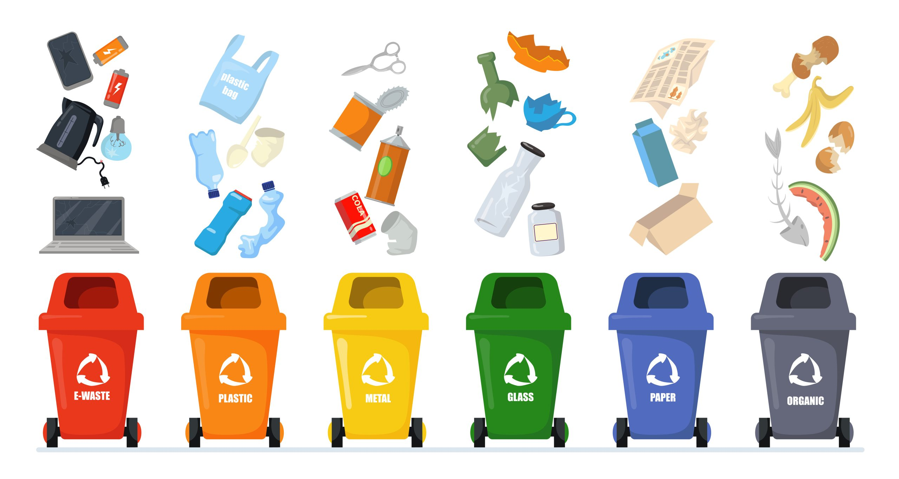

tipos de residuos
- ¿Qué son los residuos y por qué es importante separarlos adecuadamente?
- Tipos de recogida de residuos: métodos de gestión y disposición
- papel y cartón
- plástico
- metal
- plástico
- ¿Qué tipos de vidrio se pueden reciclar?
- Vidrio que NO se puede reciclar
- Formas de reutilizar el vidrio
- residuos orgánicos
- ¿Cuál es la clasificación de los residuos orgánicos?
¿Qué son los residuos y por qué es importante separarlos adecuadamente?
Los residuos son materiales que ya han cumplido con su cometido y que pasan a convertirse en
desechos. Pueden encontrarse en estado sólido, líquido o gaseoso y, aunque suelen ser sinónimo
de basura, lo cierto es que algunos de ellos pueden ser reciclados o reutilizados, obteniendo
una segunda vida útil.
Por eso, es fundamental separar adecuadamente los residuos, ya que, dependiendo de sus
características, algunos pueden aprovecharse de nuevo, pasando por un proceso de tratamiento
y valorización.
Además, también hay residuos que son perjudiciales para la salud y el medioambiente y que deben
gestionarse de forma adecuada para generar el menor riesgo posible.
Separar los distintos tipos de residuos en origen nos permite reducir la cantidad de ellos que
llegan a los vertederos y, en consecuencia, nuestra huella de carbono; también facilita el
reciclaje y la conservación de los recursos naturales.

Tipos de recogida de residuos: métodos de gestión y disposición
Existen diversos tipos de recogida de residuos, aunque los métodos de gestión
y disposición principales son:
Vertederos: es la forma más común de eliminar residuos y consiste en enterrarlos bajo tierra,
aunque su impacto ambiental es alto porque ocasionan la contaminación del suelo.
Incineración: consiste en quemar residuos a altas temperaturas para reducir su volumen y su
peso, aunque también es un método que contamina la atmósfera.
Reciclaje: consiste en convertir residuos en materiales reutilizables, por lo que es un
método sostenible y respetuoso con el medioambiente, ya que reduce las emisiones de gases de
efecto invernadero y ahorra energía.
Compostaje: es el proceso de descomposición de residuos orgánicos, lo que es un aditivo en
nutrientes para el suelo; esto también reduce la cantidad de residuos que llegan a los
vertederos y reduce las emisiones de gases de efecto invernadero.
papel y cartón

El papel es un material 100% reciclable. El residuo de papel es un material que puede volver a utilizarse
para la fabricación de papel nuevo. El papel y el cartón usado y recogido se transporta a un
almacén de un gestor (recuperador) de papel y cartón, donde se clasifica por tipos, se acondiciona,
enfarda y se envía a la fábrica papelera.
Básicamente, el residuo de papel tratado entra en la fábrica de papel por cintas transportadoras.
Se mezcla con agua en el púlper y se agita. Se separan de las grapas, plásticos de las fibras de
papel y se incorporan sustancias tensioactivas con el fin de eliminar la tinta que queda en la
superficie del baño. La suspensión de las fibras se somete a un secado sobre una superficie plana,
para recuperarlas. Después se las hace pasar por unos rodillos que las aplanan y compactan,
saliendo finalmente la lámina de papel reciclado.
El número de veces que se puede reciclar tiene un límite ya que se van perdiendo parte de las
fibras que constituyen la pasta, por lo que se añade una pequeña proporción de fibras vírgenes.
plástico

Los plásticos son materiales, generalmente de bajo costo, baja densidad y que tienen una gran
variedad de aplicaciones. Un problema ambiental generado por los plásticos se origina en el
empleo de estos por periodos cortos de tiempo y representan un alto porcentaje de los
plásticos usados; como por ejemplo los plásticos desechables de poliestireno, las bolsas
usadas en el mercado, las botellas de plástico de los refrescos, entre otros.
Por consiguiente, generan una gran cantidad de desechos y la primera solución para su
disposición fueron los rellenos sanitarios. Al incrementar su cantidad en los vertederos se
buscaron otras opciones y se generaron algunos tratamientos para su disposición. Los
principales métodos que existen para tratar los plásticos provenientes de la basura son el
reciclado, la incineración y el método de gasificación.
metal

A la hora de hablar de la gestión integral de residuos es importante no descuidar todo lo que
concierne a la clasificación y reutilización de residuos metálicos. Por ejemplo, restos de
aires acondicionados, latas, electrodomésticos, luminarias, baterías usadas, y metales como
ser estaño, cobre, aluminio, hierro, etc.
Comúnmente, este tipo de residuos suele clasificarse como chatarra inservible. Se depositan en
basureros públicos y su vida útil se da por finalizada antes de tiempo. Estos materiales
metálicos suelen compartir la característica de ser voluminosos y de ser buenos transportes
para el calor y la energía. Por lo cual, su reutilización y buena gestión es clave. Además,
se pueden reutilizar no una sino muchísimas veces.
La gran mayoría de los residuos metálicos (en grandes cantidades) suele generarse en fabricas
e industrias. Muchas refinerías o fundiciones suelen recuperar estos materiales para
reutilizarlos pero no es lo común.
Todos estos metales son considerados desperdicios y en realidad, pueden ser reutilizados si se
realiza una buena clasificación magnética y una buena gestión de los mismos. Lamentablemente,
la gran mayoría de los residuos metálicos no recibe ningún tratamiento y se destinan al
basurero general. Allí, se deterioran y se contaminan de otras sustancias nocivas por lo cual,
muchas veces, dejan de ser útiles.
Es importante ser conscientes de la cantidad de residuos metálicos que generamos y de la
importancia de una gestión correcta y responsable. Para una buena recuperación de los
desperdicios metálicos se deben realizar tratamientos efectivos de calidad, sea para la
recolección, clasificación y para la gestión de la reutilización.
La gestión de residuos no es más que un ciclo que debe comenzar y cerrarse de una manera
responsable.
vidrio

¿Qué tipos de vidrio se pueden reciclar?
El vidrio transparente que se usa en recipientes, botellas y frascos se puede reciclar, el mismo
generalmente se compone de cal sodada, la forma de vidrio más común utilizada.
Otros tipos de vidrio incluyen el borosilicato, que tiene al menos un 5 por ciento de óxido
bórico y tiene resistencia a altas temperaturas; el aluminosilicato, que tiene óxido de aluminio
y una gran durabilidad química. El 96 por ciento del vidrio de sílice, un vidrio de borosilicato
que se procesa para eliminar la mayoría de los ingredientes sin silicato y vidrio fundido, tiene
dióxido de silicio puro y es el vidrio más caro.
Vidrio que NO se puede reciclar
Si bien el reciclaje de vidrio es muy eficiente desde el punto de vista energético, el vidrio
debe clasificarse mediante un proceso de composición de color para eliminar los contaminantes.
Los diferentes tipos y colores del vidrio tienen diferentes puntos de fusión, por lo que no todos
los materiales de "vidrio" se pueden reciclar.
Los productos de vidrio como ventanas, platos aptos para el horno, Pyrex y espejos se fabrican de
manera diferente a las botellas y frascos de vidrio hechos con vidrio reciclado, por lo que no se
pueden reciclar con botellas y frascos transparentes estándar. Los artículos con vidrio esmerilado,
placa, vidrio, Pyrex, espejos y cerámica se consideran contaminantes y no se pueden reciclar.
Tampoco se reciclan las bombillas pero los programas de reciclaje de la comunidad y las tiendas de
consumo, que venden productos como bombillas, ventanas, etc. a veces ofrecen programas/recolección
de reciclaje. Por ejemplo, Lowe's tiene contenedores de recolección en sus tiendas para bombillas
incandescentes, baterías y bolsas de plástico.
Formas de reutilizar el vidrio
Los artículos como botellas, frascos y recipientes de vidrio vacíos son materiales duraderos para
usar en proyectos de bricolaje, manualidades, almacenamiento, jardinería, decoraciones y mucho más.
Algunas ideas incluyen:
Fuentes de agua - Las botellas de vidrio llenas de agua, volteadas boca abajo e
insertadas en el suelo pueden liberar agua lentamente.
Decorar el jardín - Cubre la grama con botellas o crea un mosaico con vidrios
rotos para incorporarlo a un camino de jardín o colgarlo en un invernadero.
Almacenamiento de alimentos - Los frascos vacíos de mermelada, salsas, mantequilla de maní, miel,
etc. pueden ser recipientes reutilizables para el almacenamiento de alimentos. Reutilizar estos
artículos también ayuda a reducir el uso de plásticos de un solo uso.
Los frascos vacíos también se pueden usar para almacenar artículos cotidianos como clips, chinchetas,
clavos, suministros para manualidades, etc.
Decoración - Las botellas de vino, cerveza y leche pueden ser hermosos centros de
mesa, jarrones o lámparas.
Proyectos de arte - Con un poco de creatividad, una simple botella o frasco de
vidrio puede convertirse en decoración navideña, vela, centro de mesa, maracas o incluso juguetes.
Hay una frase que dice: “Todo empieza por la casa”. Aprender a vivir de una manera más sustentable
no es tan complicado, hacer ajustes sencillos poco a poco ayudarán a crear un impacto positivo
contra la crisis climática. En el Sierra Club creemos en estas acciones y aplaudimos a quienes
día a día se unen a esta lucha de la mejor manera que pueden.
residuos orgánicos

¿Cuál es la clasificación de los residuos orgánicos?
¿Qué son los residuos orgánicos? Se consideran residuos orgánicos aquellos
desechos de seres vivos, o partes de los mismos. Provienen de orígenes biológicos,
y son biodegradables. Pero no todos los residuos orgánicos son iguales, según su
naturaleza, según la manera de gestionar el residuo o según dónde se originen, se clasifican de
diferente manera. Es importante saber cómo se separan los residuos orgánicos.
Si lo enfocamos desde la perspectiva de la gestión de residuos, existen dos clases, según el
Ministerio para la Transición Ecológica y Reto Demográfico (MITECO): Fracción Orgánica y Poda. A
su vez, y según su naturaleza, la fracción orgánica se clasifica en residuo de origen alimentario
y residuo de origen vegetal. Por lo tanto, la combinación de estos dos criterios nos deja la
siguiente clasificación:
Fracción Orgánica:
Origen alimentario y de cocina: son aquellos residuos provenientes de la
preparación de la comida. Restos de comida, pieles de fruta, huesos, cáscaras etc. También se
consideran es este punto, el papel de cocina sucio, servilletas sucias y los pañuelos de papel.
Fracción Vegetal o restos de origen vegetal: se refieren a los residuos que
generan las plantas y las flores a pequeña escala, como hojarasca, malas hierbas.
Poda: en este caso se incluyen los restos que generan las plantas, pero de
mayor escala. Por ejemplo, ramas de árboles y demás restos de tipo leñoso. La poda requiere de
medios logísticos diferentes a la fracción vegetal, se necesita maquinaria de mayor envergadura.
¿Dónde se generan los residuos orgánicos? Clasificación según el lugar de origen:
Origen doméstico: son los desechos que generamos en nuestras casas.
Origen comercial: residuos que se generan en comercios, normalmente enfocados
a servicios de hostelería, restauración y venta de alimentos. Por ejemplo, pescaderías,
fruterías bares, supermercados etc.
Origen industrial: procedentes de empresas. Aquí podemos encontrar ganaderías,
empresas agrícolas, bodegas, empresas alimentarias…
Todos los residuos orgánicos, pertenezcan a la categoría que pertenezcan, han de ser gestionados
para su correcta recolección y posterior gestión. Podemos empezar desde nuestras casas utilizando
el contenedor marrón. Sin embargo, para los residuos de origen comercial e industrial, es
conveniente que se encarguen profesionales en la materia. En Morga industrial
somos especialistas en la gestión integral de residuos, recogida, transporte y gestión.